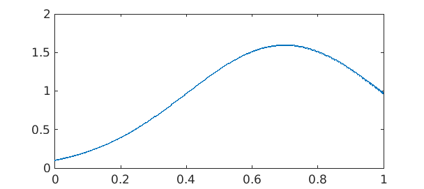
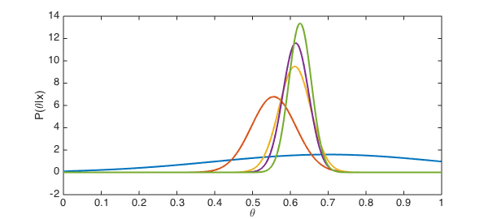
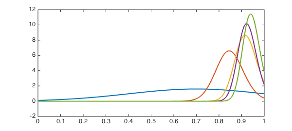
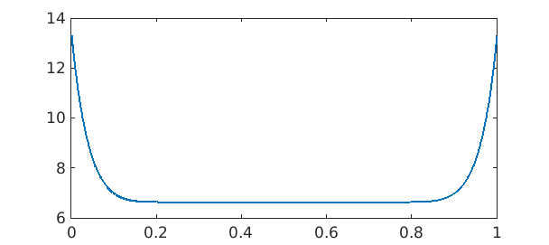

function BayesianGradebook
In the US and many other educational systems, students are typically given many assessments (homework problems, projects, exams, etc) that are marked with individual scores. These scores are usually averaged (often with weights) to arrive a course score.
It's not a very scientific process. One way of injecting more clarity (if not "fairness") is to appeal to Bayesian statistics. How might that look?
Bayes' theorem
Suppose a student's "true ability" is represented as a number $\theta$ in the interval $[0,1]$. We start with a prior belief about how $\theta$ is distributed for an individual, represented as the probability density $P(\theta)$. Now let $x$ be an observation--that is, a score on an assessment. Bayes' theorem tells us how to update our beliefs about $\theta$ in light of the new evidence. Mathematically, the new probability distribution is conditioned on the observation, which we write as $P(\theta | x)$ and call the posterior distribution.
Elementary probability gives us $P(\theta|x) = P(\theta,x)/P(x)$, where $P(\theta,x)$ is the joint probability of $\theta$ and $x$ simultaneously. Because a similar expression holds for the opposite conditional $P(x|\theta)$, we rearrange to get Bayes' theorem: $$ P(\theta|x) = \frac{ P(x|\theta) P(\theta)} { P(x) } $$ The quantity $P(x|\theta)$ is called the likelihood: for each possible $\theta$, what is the probability that we would observe $x$? Where this likelihood is small, the posterior will be greatly reduced.
It's worth noting that we treat the posterior $P(\theta|x)$ as a distribution in $\theta$, and the quantity $P(x)$ in the denominator of Bayes' theorem can be seen (and computed!) simply as a normalization needed to make the posterior a probability distribution.
Prior distribution
Here is a chebfun for $\theta$.
theta = chebfun('x',[0 1]);
We define expected value and variance functionals:
E = @(f,prob) sum(f.*prob); Var = @(f,prob) E( (f-E(f,prob)).^2, prob );
We now choose a prior distribution to initialize our belief about ability $\theta$. Good practice would be to use past empirical data, but we will idealize it as a truncated normal distribution with a fairly large variance.
phi = @(mu,sigma) exp( -((theta-mu)./sigma).^2/2 ); prior = phi(.7,.3); prior = prior/sum(prior); plot(prior,'linewidth',2)

Likelihood function
Given a "true ability" value $\theta$, we can model the probability of observing a score $x$ also with a truncated normal: $$ P(x|\theta) = \frac{ \phi_{\theta,\sigma}(x) }{ q(\theta,\sigma)}, $$ where $\phi_{\theta,\sigma}$ is the Gaussian function as above with mean $\theta$ and variance $\sigma^2$, and $q$ provides normalization. Because $\phi_{\theta,\sigma}(x) = \phi_{x,\sigma}(\theta)$ for the Gaussian, we can assemble the likelihood function rather easily.
We're going to treat $\sigma$ as a fixed parameter, though of course one could create a Bayesian estimator for it as well.
sigma = 0.06; q = chebfun( @(theta) sum( phi(theta,sigma) ), [0 1], 'vectorize' ); likelihood = @(x) phi(x,sigma)./q;
Update process
We will encapsulate the Bayesian update process in a function for repeated use below.
function belief = bayes(scores)
belief = prior;
m = length(scores);
Traditional = cumsum(scores) ./ (1:m);
for k = 1:m
b = belief(:,k).*likelihood(scores(k));
b = b / sum(b);
belief(:,k+1) = b;
Mu(k) = E(theta,b);
Sig2(k) = Var(theta,b);
[~,Mode(k)] = max(b);
end
fprintf('Method %6s %6s %6s %6s\n','m-3','m-2','m-1','m')
fprintf('------------------------------------------------\n')
fprintf('Traditional %6.3f %6.3f %6.3f %6.3f\n',Traditional(m-3:m))
fprintf('Bayes Mode %6.3f %6.3f %6.3f %6.3f\n',Mode(m-3:m))
fprintf('Bayes Mean %6.3f %6.3f %6.3f %6.3f\n',Mu(m-3:m))
fprintf('Std dev %6.3f %6.3f %6.3f %6.3f\n',sqrt(Sig2(m-3:m)))
end
Poor student
We start with a student who has a cluster of fairly low scores.
scores = [.55 .67 .62 .66];
Now we apply Bayes estimation. The output is explained below.
belief = bayes(scores);
Method m-3 m-2 m-1 m ------------------------------------------------ Traditional 0.550 0.610 0.613 0.625 Bayes Mode 0.556 0.612 0.614 0.626 Bayes Mean 0.556 0.612 0.614 0.626 Std dev 0.059 0.042 0.034 0.030
The distributions show how confidence in estimating the student's ability increases with each new score.
clf, plot(belief,'linewidth',2)
xlabel('\theta')
ylabel('P(\theta|x)')

When we want to condense a distribution into a 'best guess' for the ability $\theta$, there are two obvious choices. One is to take the mode of the distribution; that is, the value of $\theta$ that maximizes probability. However, the standard (and probably better) estimator is to use the expected value of $\theta$. Both are shown in the output above and compared to the traditional method of a running average.
In this case, the different grading methods do not differ in any meaningful way. We do get a little extra information, though: the confidence with which we believe our estimates, as reported by the standard deviation of the variable $\theta$.
Good student
It might seem like the Bayes method could hurt a very good student, because of the initial prior that assumes a modest ability. In fact, these students turn out to be the chief beneficiaries of the Bayes approach.
If we shift all the scores in the previous example by 30 percentage points, the running averages simply shift too.
scores = 0.3 + scores belief = bayes(scores);
scores = Columns 1 through 3 0.850000000000000 0.970000000000000 0.920000000000000 Column 4 0.960000000000000 Method m-3 m-2 m-1 m ------------------------------------------------ Traditional 0.850 0.910 0.913 0.925 Bayes Mode 0.845 0.915 0.922 0.940 Bayes Mean 0.847 0.915 0.922 0.938 Std dev 0.060 0.043 0.037 0.032
As you can see, the Bayes estimator does start out a bit more skeptical than the running average, but ends up giving the student a higher score.
The reason is the boundary.
cla, plot(belief,'linewidth',2)

Because it's impossible to get a score greater than 1, scores close to the upper limit are shortchanged in the traditional method. Looking back at the definition of the likelihood function, we see that the factor $1/q$ multiplies the normal distribution centered at the score $x$. Because $q$ represents normalization of a truncated Gaussian, it gets smaller near the endpoints, and its reciprocal is larger.
clf, plot(1./q,'linewidth',2)

As a result, when $x$ is large enough to have some "explanatory energy" at the boundary, our belief in the higher values is amplified to compensate for the inability to observe scores greater than 1.
The comeback kid
It's not uncommon for a student to do much worse on the first assessment than on the rest. Such students sometimes ask the instructor to drop the bad grade as an aberration. Let's do that experiment.
scores(1) = 0.72 belief = bayes(scores);
scores = Columns 1 through 3 0.720000000000000 0.970000000000000 0.920000000000000 Column 4 0.960000000000000 Method m-3 m-2 m-1 m ------------------------------------------------ Traditional 0.720 0.845 0.870 0.892 Bayes Mode 0.719 0.843 0.870 0.896 Bayes Mean 0.719 0.844 0.872 0.898 Std dev 0.059 0.043 0.037 0.033
The Bayes method suggests that a small adjustment might be justified. The first score, by itself, isn't all that unlikely from someone of considerably higher ability. Interestingly, the standard deviation suggests we have just as much confidence in this case as with the more reliable good student.
You gotta have faith
Suppose we are now a lot less confident in how well the outcome represents ability. This could be appropriate for homework problems, for instance, which are typically of low stakes and for which the student could get a lot of extra help. Or, it might represent some empirical observation about the spread of scores on one exam.
sigma = 0.15; q = chebfun( @(theta) sum( phi(theta,sigma) ), [0 1], 'vectorize' ); likelihood = @(x) phi(x,sigma)./q;
We now have a student with mostly good scores and a few clunkers.
scores = [ 0.88 0.90 0.46 0.86 0.93 0.61 0.95 0.89 0.84 0.76 ]; belief = bayes(scores);
Method m-3 m-2 m-1 m ------------------------------------------------ Traditional 0.799 0.810 0.813 0.808 Bayes Mode 0.830 0.848 0.854 0.846 Bayes Mean 0.834 0.851 0.856 0.850 Std dev 0.066 0.062 0.059 0.057
Because we don't have much confidence in any one assignment, Bayes overlooks the low scores more than the running average does. This could be considered more accurate (though less comprehensible) than a drop-lowest-score ad hoc policy.
Perhaps the most illustrative numbers in this whole exercises are the Bayesian standard deviations. Even with decent assessments and consistent scores, any respectable confidence interval will usually cover more than one letter grade category. Write your exams carefully!
end